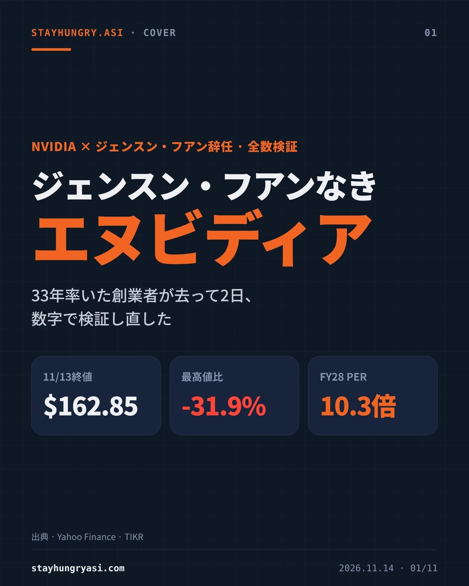
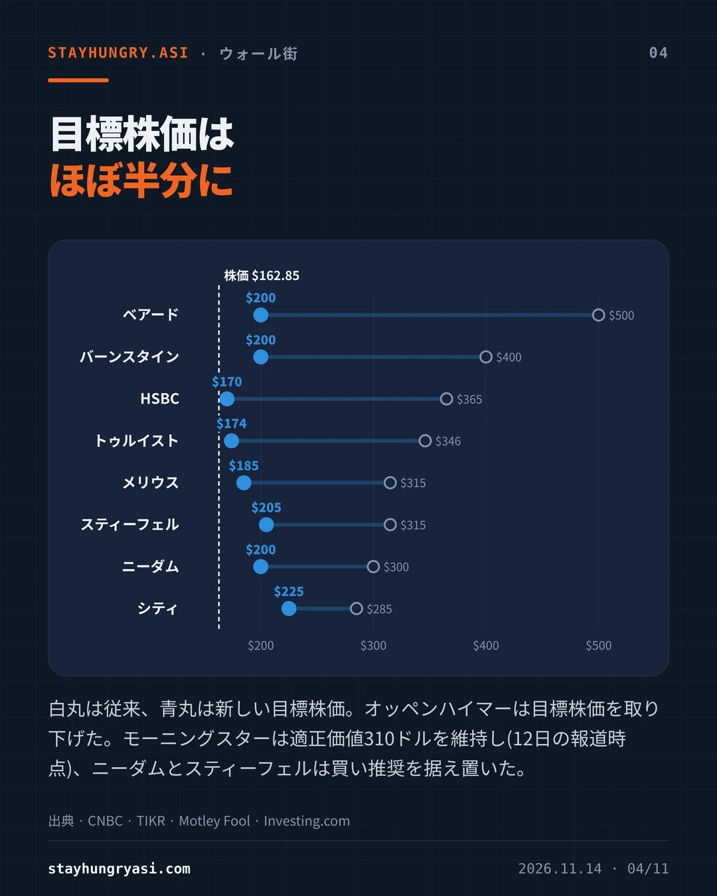
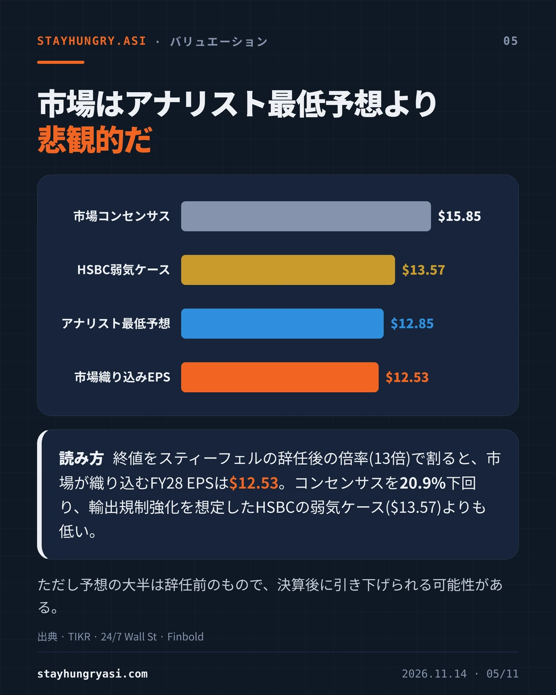
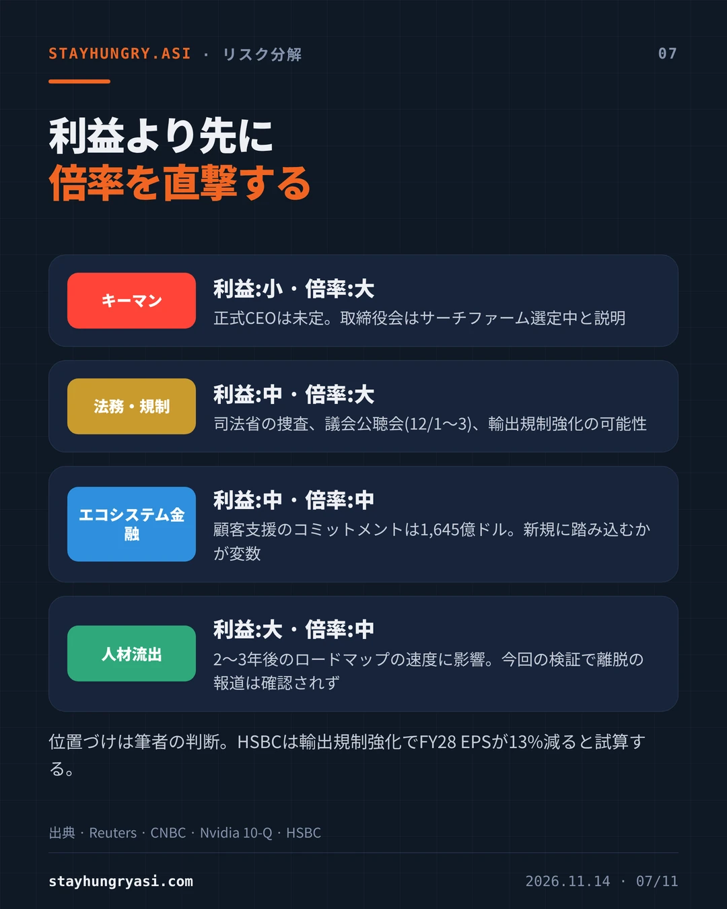
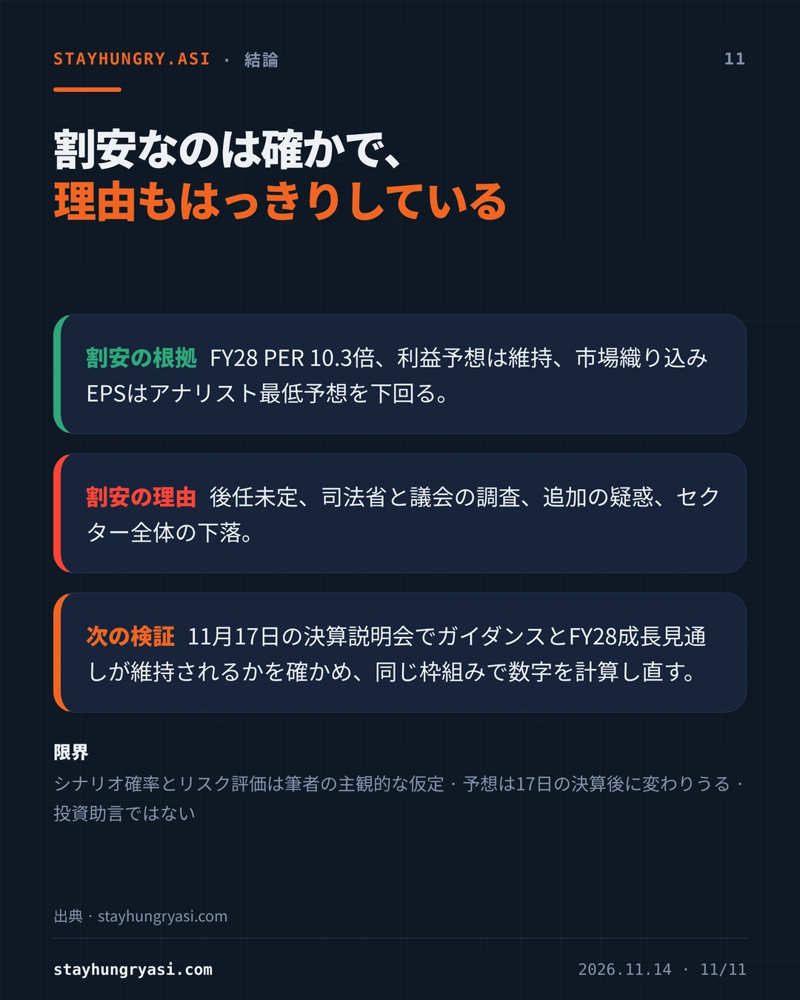

データ基準 2026年11月14日(韓国時間)、米国11月13日終値 · stayhungryasi.com
表記ルール:数値は出典に基づく事実である。「仮定」とシナリオ確率は筆者の主観的な判断である。人物に関する内容は、報じられた事実と疑惑を分けて記した。投資助言ではない。
要点を11枚にまとめた。画像を押すと拡大できる。
| 日付 | 出来事 |
|---|---|
| 2026-10-06 | 最高値(終値)239.24ドル |
| 2026-11-05 | 選挙直後の調整で9.26%下落、181.60ドル |
| 2026-11-08 | フアン氏が不倫を認め従業員に謝罪。取締役会は同氏が外国情報機関の標的だったかについて独立調査を開始 |
| 2026-11-11 | 取引終了後、取締役会が解任を準備していると報じられる。時間外で8.6%下落 |
| 2026-11-12 | 辞任を発表。取引中に148.80ドルまで下げ、166.19ドル(4.34%安)で引ける |
| 2026-11-13 | HSBCが格下げ。162.85ドル(2.01%安)で引け、週間で12.8%下落 |
会社は辞任の理由を明らかにしておらず、国家安全保障上の違法行為が確定した事実はない。米司法長官は11月12日、当該人物がスパイかどうか結論に至っていないと述べた。辞任後には、別の従業員との関係をめぐる疑惑がロイターの報道で加わった。
週間下落率12.8%は2025年4月以来最大で、6週連続の下落は2012年以来である。時価総額は約3.93兆ドルと4兆ドルを下回った。少なくとも9社が投資判断を中立に引き下げた。
| 機関 | 従来の目標株価 | 新しい目標株価 | 投資判断 |
|---|---|---|---|
| ベアード | $500 | $200 | 中立 |
| バーンスタイン | $400 | $200 | マーケットパフォーム |
| HSBC | $365 | $170 | ホールド |
| トゥルイスト | $346 | $174 | ホールド |
| メリウス | $315 | $185 | ホールド |
| スティーフェル | $315 | $205 | 買い(据え置き) |
| ニーダム | $300 | $200 | 買い(据え置き) |
| シティ | $285 | $225 | 未確認 |
オッペンハイマーは目標株価を取り下げた。モーニングスターは適正価値310ドルを維持した(11月12日の報道時点)。HSBCの従来の目標株価は365ドルと375ドルで報道が分かれており、多数の報道に従った。
| 項目 | FY28 EPS |
|---|---|
| 市場コンセンサス(集計元により15.77〜15.93ドル) | $15.85 |
| HSBC弱気ケース(輸出規制強化) | $13.57 |
| 最も低いアナリスト予想 | $12.85 |
| 市場織り込みEPS(筆者計算) | $12.53 |
市場織り込みEPSは、終値162.85ドルをスティーフェルが辞任後に適用した13倍で割った値である。コンセンサスを20.9%下回り、最も低いアナリスト予想よりも低い。12カ月先予想PERの5年平均は36倍だった。ただし予想の大半は辞任前のもので、11月17日の決算発表後に引き下げられる可能性がある。
11月12日の取引序盤まではAMDとブロードコムが上昇していた。13日はAMDが8.75%、ブロードコムが4.76%下げ、いずれもエヌビディアより下落幅が大きかった。市場がシェアの移動よりもAI投資の連鎖全体のリスクを織り込み始めたと解釈できる(筆者の判断)。エヌビディアは顧客のデータセンター建設を保証とコミットメントで支えてきており、2026年7月期の四半期報告書の時点で顧客支援のコミットメントは1,645億ドルである。
| リスク | 影響(筆者の判断) | 現状 |
|---|---|---|
| キーマン | 利益:小 · 倍率:大 | 正式CEOは未定。取締役会はサーチファーム選定中と説明 |
| 法務・規制 | 利益:中 · 倍率:大 | 司法省の捜査、議会公聴会(12/1〜3)、輸出規制強化の可能性 |
| エコシステム金融 | 利益:中 · 倍率:中 | 顧客支援のコミットメントは1,645億ドル。新規に踏み込むかが変数 |
| 人材流出 | 利益:大 · 倍率:中 | 2〜3年後のロードマップの速度に影響。今回の検証で離脱の報道は確認されず |
HSBCは、輸出規制が強化されればFY28 EPSが13%減ると試算している。
| シナリオ | 確率 | EPSの仮定 | 倍率 | 株価レンジ | 条件 |
|---|---|---|---|---|---|
| 強気 | 25% | 15.85ドルを維持 | 15〜18倍 | $238~285 | 実績ある技術系CEOを早期に選任、法人は嫌疑なし |
| 基本 | 45% | 15.85ドルを維持 | 12〜13倍 | $190~206 | 暫定体制が長期化、業績は維持、割引は継続 |
| 弱気 | 30% | 20〜30%下方修正 | 9〜10倍 | $100~127 | 捜査が法人に拡大、輸出規制、人材流出 |
確率加重の期待値は189ドルで、終値を16.1%上回る。この数字は上記の仮定に全面的に依存し、目標株価ではない。
AIアクセラレーター売上に占めるエヌビディアのシェアは、2024年の約87%から2026年には約75%に下がると推計されている(Silicon Analysts)。2026年の出荷はカスタムASICが44.6%増、汎用GPUが16.1%増の見通しだ(TrendForce)。侵食は今回の件より前から進んでいた。リーダー不在がそれを加速するというのは仮説であり、13日の競合の急落はこの仮説と合わない。シェアは集計機関により70〜87%と幅がある。
| 時期 | イベント | 確認する点 |
|---|---|---|
| 11/17 | 第3四半期決算 | ガイダンスは1,080億ドル。FY28の約70%成長見通しを再確認するか |
| 12/1〜2 | 下院3委員会 | フアン氏と法務責任者に出席を要請。応じなければ召喚状 |
| 12/3 | 上院銀行委員会 | フアン氏とラトニック商務長官に証言を要請。ラトニック氏は受諾 |
| 未定 | 正式CEOの選任 | FTはArmのレネ・ハース氏への接触を報道。取締役会は「臆測は時期尚早」 |
| 随時 | 捜査と人材の動向 | 捜査が法人に及ぶか、中核エンジニアが離れるか |